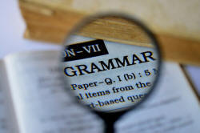

Testing and assessing grammar

Grammar is tested directly or indirectly in all tests of a learner's language ability. It is difficult to conceive of any type of test in which there is no consideration of the grammatical abilities of the test takers. Even when a test item looks like this, for example:
Select the correct
answer:
Please ________ me the answer.
a) say
b) speak
c) talk
d) tell
and is presumably designed to test the subject's knowledge of vocabulary rather than grammar in English, it requires the test taker to understand issues of transitivity surrounding these four troublesome verbs and the effect intransitivity, mono-transitivity and di-transitivity has on the selection of the correct form.
 |
Indirect grammar testing |
Even tests of reading skills which are designed to test the
learner's ability to unpack a sentence such as:
The appalling and
unusual winter weather has caused the extensive delays on the trains
require sensitivity to word ordering (what caused what), noun pre-
and post-modification as well as the ability to break the clause
into its constituents (subject and object noun phrases and verb phrases) and these are,
of course, grammatical not skills issues.
Tests of speaking and writing ability will also require the
learners to apply grammatical knowledge, of course, in order to make
the messages clear so that the meaning of, for example:
How long are you staying?
is understood to refer to the future as well as the present and
tense forms are, of course, centrally a grammatical issue.
Tests of listening, ostensibly designed only to assess the ability to unpack the spoken word, also rely for their successful achievement on a good deal of bottom-up processing of the grammar of the language to make meaning accessible (not to mention a good deal knowledge of the phonological systems of the language).
The examples above are of ways in which, wittingly or not, many assessment procedures indirectly assess the test takers' ability to use grammatical knowledge to access and express meaning. This guide is, however, concerned with ways to test grammatical competence directly by designing and administering tests which focus on identifiable grammatical targets.
Before we can consider how we test grammar, however, we need briefly to define our terms.
|  | What to test: what is grammar? |
By some definitions, the grammar of the language will include its phonology, its lexical systems and its discourse systems so we need to decide from the outset just what our parameters are and where we draw the line. In what follows, we will exemplify testing of grammatical structures and discourse functions but will exclude as far as possible consideration of lexical relationships (such as synonymy, polysemy, collocation and hyponymy) which lie in the realm of vocabulary testing. We will also exclude the testing of phonology and prosody as those forms require a rather different approach.
In many cases, grammar and lexis can be tested together because it is difficult to establish with any certainty where the dividing lines are. Hence the use of the term lexicogrammar to refer to the systems of the language. There is a guide to what constitutes lexicogrammar on this site, linked below. From that guide, the following examples are extracted to make the point when we consider these four simple clauses:
- I am feeling ill
- I feel ill
- I am living in Paris
- I live in Paris
The issue is not purely grammatical in terms of whether the speaker chooses to use a
progressive or simple aspect of the verb.
Sentences 1. and 2. are, for most purposes, synonymous and it makes
little difference whether the speaker chooses to use the verb
dynamically, as in 1., or statively, as in 2.
However, sentences 3. and 4. are different in meaning as well as
structure. Sentence 3. implies a temporary condition but
sentence 4. implies a permanent one.
The essence of the difference lies not in the grammar, which is
common to both pairs, but in the meaning of the verbs.
Put another way, the grammar and the meaning of words are not
separate systems treatable as discrete units but are interdependent.
We need, therefore, to design tests of grammar (i.e., the sum of the
language's structures) which do not stray too far into the lexical
systems but focus on a rule-based system rather than one concerned
overly with semantic considerations.
However, almost any structural area we care to consider will have
implications for meaning so, for example, asking a learner to form a
relative clause structure from:
The woman is by the window. The woman
told us the story.
and produce:
The woman who told us the story is by the
window.
requires a good deal of fairly sophisticated manipulation of the
language's grammatical structure so is quite a good test of whether
the test taker has the ability to do that.
Because the items are essentially synonymous in terms of meaning,
the test can be said to be one purely of grammar.
However, asking a learner to transform:
That man sold us the car
into
The car was sold to us by that man
or
We were sold the car by that man
requires a similarly sophisticated manipulation but ignores the fact
that structures are not selected at random but carry pragmatic
implications concerning which constituent of the clause the speaker
/ writer intends to mark as important and that can either be the
car (because it is placed in the theme position at the
beginning), the man (because it is placed in end-focus
position and, in speech, probably stressed) or We (because
that, too, is fronted to the theme position).
The moral of all this is that it is in principle
almost impossible to test grammar discretely unless we ignore the
unbreakable connection between grammar and meaning.
We can do that, of course, but we need to know we are doing it.
So, ...
 |
... why try to test grammar separately? |
This is not the place to set out the different purposes that
tests fulfil, whether they are achievement, diagnostic, proficiency
or progress tests. Nor is this the place to discuss the motivating
factors that tests sometimes enhance. We are concerned here
with testing grammar in particular, not testing in general.
Guides to general areas of testing and lexis are linked in the list
of related guides at the end.
There are a number of good reasons for testing grammar discretely from other skills and abilities.
- Backwash:

Explicitly grammar testing often results in teachers and learners paying more attention to its teaching and being more consistent and discerning about what items they focus on.
Backwash may also have an effect on the learners. If they know that grammar is going to tested discretely, they may well be motivated to review what they have encountered in terms of tense forms, transitivity, discourse and much more and consigned to sparse notes probably jotted down in no particular order. They may even be persuaded to revisit and reorganise their notebooks. - As a measure of overall ability:
Grammatical knowledge has been shown to be an excellent indicator of a learner's overall ability in a language, even more so than lexical knowledge so, for achievement, diagnostic and placement purposes, grammar testing is a useful tool. - Face validity:
Some learners make very great efforts to understand the grammar of the language, especially those areas of it which differ fundamentally from the grammar of their first languages, because they recognise, quite rightly, that grammatical accuracy, while not always vital for communication, is a required skill. If we do not test grammar in an identifiably discrete way, learners may not feel that their abilities are being fairly assessed. - Depth vs. breadth:

Testing grammar incidentally, in a mix of other test types concerning, say, reading, writing, listening, speaking and lexical knowledge may give us some measure of the breadth of learners' grammatical knowledge but is unlikely to provide anything like the precision we require if we want to measure the depth of their knowledge of grammar and their ability to apply the rules to their production and reception. This means testing grammar separately, both in terms of understanding and production of language, so we can get some estimation of how well items are known, not just how many are recognised. - Learning grammar is more than just remembering items:

The grammar of any language is a rule-based system which can be learned. Other systems, such as the lexical system and the phonological system are, in this respect, more difficult to acquire, because they are not subject to the same constraints. There are systems, of course, or at least distinct patterns, such as collocational aspects, affixation, multi-word verbs, synonymy, homonymy and so on but, essentially, learning other parts of the language relies more on remembering items and patterns rather than rules. - Revision and review:

Grammar learning involves not only recalling the rules but applying the rules consistently and with the minimum of consideration and thought to the lexicon of the language. In order that the rules can be become automated to some extent, at least, practice is essential. Testing grammar allows for practice, too, and feedback from a test also provides a valuable opportunity to review, recycle and consolidate learners' knowledge. - The centrality of grammar:

Finally, we need get away from the assumption that teaching and testing grammar are unnecessary in a communicative classroom. Here are two opinions to consider:... language learning is essentially learning how grammar functions in the achievement of meaning and it is a mistake to suppose otherwise. .... A communicative approach does not involve the rejection of grammar. On the contrary, it involves a recognition of its central mediating role in the use of and learning of language.
(Widdowson, 1990: 97/8)and
Knowing how to build and use certain structures makes it possible to communicate common types of meaning successfully. Without these structures, it is difficult to make comprehensible sentences. We must, therefore, try to identify these structures and teach them well.
(Swan in Richards and Renandya, 2002)
The key lies in evaluating how well we are teaching the grammar of the language and how well it is being learned. For that, of course, we need assessment and testing routines.
 |
What to test: targeting the test |
What you test is dependent on why you test, i.e., what the test is designed to tell you.
 |
Construct validity |
When it comes to testing grammar, we need a clear focus on construct validity of our test. That is to say, we need to be sure that we can identify and articulate the targets of every item in our test. For example, in:
Fill the gaps with a suitable word:
John walked ________ the house and _________ the back garden.
we have, ostensibly, a test of prepositions and, because they are
functional rather than content words, that qualifies as a test of
grammar rather than lexis. Unfortunately, the number of items
that could sensibly fill the gaps is too large for us to be sure
what we are testing. We could, for example, have:
John walked into the house and into the back
garden
John walked by the house and then the back garden
John walked past the house and
around the back garden
John walked to the house and
up the back garden
and quite a few other solutions.
We can't be sure from an item like this exactly what we are testing.
The second possible example answer only contains one preposition
because then is an adverb so we are not even sure about the
word class target.
We could increase the construct validity of the test by having
something like:

to make it clearer what is required because it should evince only:
John walked through the house and into the
back garden.
although
John walked through the house and to the back
garden
is still a possible correct alternative which precludes us from
testing whether the test takers can distinguish the fact that
into is a preposition of movement only.
That is, also, cumbersome and somewhat time-consuming to prepare,
especially if we are intending to test a wide range of different
sorts of prepositions.
 |
Content validity |
If achievement testing is the concern, it is obviously important to consider content very carefully. We want to test only those items which we have taught. So ... :
- We need to select items which have been taught and exclude any sense of general proficiency or diagnostic testing.
- We need to prioritise what we test and consider the range of items we can sensibly test in the time available.
- We need to make sure that the contexts in which we test the
items closely parallel the contexts in which they have been
taught. For example, if we have taught a preposition such
as beyond in the context of spatial relationships, we
cannot test it in a context such as:
Fill the gap with a suitable word:
because that is a metaphorical use of the item so we need to design an item such as:
That is ________ belief!Fill the gap with a suitable word:
The house is just ________ the hill
 |
Reliability |
We can, of course, design a test which is more precisely targeted and have something like:
Fill the gaps with
so or
such:
It was ________ a beautiful day and _________ warm that we had
dinner outside.
which only allows one possible answer in each gap. This makes it a more valid test in theory but, of course, the learners have a 50-50 chance of getting it right without any knowledge of the language at all so the test is almost useless and won't discriminate. The test item, such as it is, is unreliable.
What we need, therefore, is a set of test items which are valid in two ways and also reliable in terms of the test we administer. That is not easy to achieve but there are some suggestions in this guide for how we might proceed.
Objectivity in marking |
Not all tests of grammar have to be discrete item tests open to
objective marking because the answers are right or wrong with no
alternative correct solutions.
Grammar testing does, however, lend itself to objectively marked
discrete item tests because it is much easier to contrive tests of
grammar and structure which allow of only one correct answer.
This, of course, makes marking more reliable because no judgements
have to made.
Skills testing, by contrast, often relies on holistic marking of
learner production even when it is strictly criterion referenced.
Naturally, one can take a piece of student production, written or
spoken and assess the use of grammar within it but it requires quite
a sophisticated marking procedure if it is to be fair.
Grammatical accuracy is often one of the criteria against which
students' production is assessed but that is too loose a term for
any great precision. It can be broken down, like this, for
example:
- use of tense forms
- prepositional phrase use
- word ordering
- conjunction and linking
- pronoun use
- verb form use
and so on but the list will be different depending on what has
been taught and what needs to be discovered.
For this reason, what follows is a set of test types that are, in
general terms at least, reasonably open to objective marking against
a single right-or-wrong criterion.
 |
Selecting grammatical items to test |
Grammar is a huge topic and we are usually not trying to test
all of it but to select a representative sample of what we require
the learners to have mastered already or to test how well items have
been learned. In the first case, we are testing proficiency
only and in the second case, achievement as well as proficiency.
Proficiency-only tests are frequently used to set benchmarks (often
via public examinations) or as diagnostic or placement tests.
Achievement tests are more often used in formative assessment to see
how well items have been mastered and what needs revision and
review. That information is the basis on which the next stage
of a teaching programme can be devised.
Unless our approach has been entirely random, we should be able to draw up a list of the items to test. As an aide memoir, here's a list of commonly targeted grammatical items arranged in three levels:
| A1 / A2 | B1 / B2 | C1 / C2 |
|
VERBS AND TENSES: First conditional Gerunds after verbs, e.g., like, love, go, enjoy going to: prospective aspect have got: possession Imperatives: commands and directions Infinitives after verbs, e.g., want, would like let's + infinitive Present Progressive: current events and future arrangements Past Progressive Present Perfect Present simple: positive, negative, interrogative forms and short answers Past simple: positive, negative, interrogative forms and short answers and common irregular forms there is/are/was/were Verbs commonly used statively. (think, know etc.) MODAL AUXILIARY VERBS: can – ability and permission. could – ability in the past and permission must – obligation will – requests and futurity would – requests DEMONSTRATIVES AND PRONOUNS: Genitives: s, my, his, mine etc. Other pronouns: this, that, each, everyone, someone Subject and Object pronouns: I, me, myself etc. DETERMINERS: his, that, these, those Articles few little some any much many a lot of enough all both no every SIMPLE PREPOSITIONS: time place QUESTION WORDS AND FORMS: what where when how why who which how much/many/long whose |
TENSES, ASPECTS AND VERB FORMS: Causatives with have Future forms Past Perfect Past tense and participle forms of all common verbs Stative and dynamic verb uses Progressive aspects in the future Verbs followed by gerunds and infinitives Wish AUXILIARIES/MODALS: can – possibility (cf may). could – expressing doubt and permission have to/be able to as alternatives to must/can may – permission and possibility might – possibility must – present deduction need main verb and modal use for lack of obligation ought – advice and duty should – obligation and advice will – futurity would – 2nd and 3rd conditional uses and past habits CONDITIONALS: 2nd and 3rd forms Alternatives to if e.g., providing if vs. whether Requests with if PASSIVES: Formation in present simple and past simple Omission of agent DETERMINERS: Quantifiers – countable and mass concepts Zero article INDIRECT/REPORTED SPEECH: Rules for common tense shifts Modal auxiliary verb changes Time and place expression changes |
TENSES, ASPECTS AND VERB FORMS: Causatives with get Future Perfect Perfect aspects and modal auxiliary verbs Progressive + perfect aspects Wish including past regrets and irritation MODAL AUXILIARY VERBS: can – tendencies could – (cf was able to/could have), doubt, sarcasm dare as a modal and main verb might – irritation and sarcasm must – past deduction (cf couldn't have/can't have) needn't have done vs. didn't need to shall as 1st person will and for emphasis in 2nd person should for obligation and deduction and in conditionals without if will for annoying habits, assumptions and insistence CONDITIONALS: Alterations with modal auxiliary verbs More alternatives to if, e.g., providing, supposing, otherwise, else, unless, provided that, on condition that, assuming Alternatives without if Mixed conditionals Subjunctive forms Tense changes across clauses Unfinished conditionals PASSIVES: Infinitive constructions Stative vs. dynamic passives With complex tenses DETERMINERS: few, a few, a little, little, less, fewer INDIRECT/REPORTED SPEECH: Anecdotal uses Complex tense shifts Modal auxiliary verb changes Deixis |
The items are, of course, cumulative so knowledge of the forms at lower levels is assumed in the higher levels and does not need to be re-tested.
There are some problems in selection from list such as these (many more of which you will find via a short web search).
- Exhaustiveness:
No such list can ever be exhaustive especially as one goes up the levels. An exhaustive list of all the possible grammatical structures in English that learners may have encountered would run to thousands of pages. - Judgements:
Teachers have continually to make judgements concerning the sorts of grammatical items that their learners need to master so expressions such as SIMPLE PREPOSITIONS which appear at A1 / A2 level need to be interpreted. - Lexicogrammar:
As we noted above, meaning can rarely if ever be separated neatly from structure so we also need to test whether our learners can use the forms appropriately rather than merely mechanically.
The moral is to try as far as possible in the selections of items to test to avoid reliance on lists and to focus only on the items which have been taught, or at least encountered, on the course. That is feasible if one is designing a progress or achievement test, less so in designing placement, diagnostic or proficiency tests.
 |
Measuring grammatical knowledge: ways and means |
The following ten suggestions are just that: suggestions. There are almost countless ways in which your learners' grammatical competence can be assessed. The focus here is on trying to devise testing procedures which conform to the three issues identified above:
- construct validity:
Do we know and can we describe what we are testing? - content validity:
Are we only testing those items that we can reasonably expect our learners to have acquired during the programme?
We need here to be careful not to focus only on those structures which happen to be easy to test. - reliability:
Does the test require the learners to demonstrate knowledge or can they just guess?
and are also, for the reasons set out above, open to objective marking.
 |
Gap-fill tests |
Gap-fill tests are simple to design and administer but some care has to be used to make sure they are reliable tests and that the gaps can only be filled with the target item or items. For example:
Fill the gaps with the correct determiner:
We are having __________ problems with the system than before
She has __________ interest in it now
than she had so won't study economics
We only have __________ time but it should be enough
I have __________ Euros left over from my holiday which you can have
which attempts to focus only on a range of
four possible determiner choices. Even here, the gaps could be
filled with other determiners (and this is a consistent problem with
attempts to test determiners and pronouns) so the rubric could be
changed to include:
select from fewer, a few, less,
a little
and little only.
and that will target the items we have in mind but also makes the test somewhat easier.
To get around that problem, we can extend the fill items to choose
from to include some distractors, ensuring that only the targets
will be reasonable solutions so we extend the range to something
like:
select four from few, a few, little,
much, many, each, every, enough
and a little.
which make the test slightly more searching.
One obvious advantage of gap-fill tests is that they come with
ready-made co-text so we can also test trickier items such as
aspects of tenses in English. For example:
Fill the gaps with the correct form of the
verbs (in brackets):
We (have) __________ lunch in the garden later
today
She (arrive) __________ so let's start the
meeting
We (marry) __________ for ten years in October
They (recognise) __________ her immediately because they
(met) __________ before
and so on.
One way of getting the test taker to settle on a predictable response is to provide only one or two alternative answers and the distracting items can be chosen to be structurally impossible in English. For example:
Cross out the incorrect terms in these
sentences:
They denied stealing anything / nothing
She gave the two children a cake each /
every / both
I hid / concealed / secreted
behind the curtain
I came across / along / by the old letters
in my overcoat
The last two examples above are indicative of the difficulty of separating grammar from meaning which was discussed above. In the third example, we have an issue of colligation (specifically transitivity) and in the fourth we need to decide whether phrasal verb structures are lexical or grammatical issues. Arguments can be made on both sides.
An alternative workaround for the problem of
limiting the test-takers' choices is to provide the first letter of
the target item and, to make it even easier, also provide the number
of letters in the item. This makes the test quite simple but
allows the test designer to be able to claim that only one possible
answer is allowed.
For example:
Fill the gaps with the correct words:
They denied stealing a _ _ _ _ _ _ _ at all
He photographed h _ _ _ _ _ _ using his phone
We have time e____________ to catch the train
I saw him last Monday but haven't s__________
Gap-fill tests in which alternatives or strong hints are provided often test receptive skill (i.e., recognition of the correct item) rather than productive skill.
 |
Completion tests |
Completion tests are an allied form but instead of gaps to fill, the test taker is constrained by how a clause or sentence begins. Many structures in English can be tested this way. For example:
Use six or more words to complete these
sentences.
It's high time
_______________________________________________________
What I enjoyed most
_________________________________________________
Under no circumstances
______________________________________________
I look forward
______________________________________________________
Such tests may constrain the learner to produce a target
structure but they require careful marking so that the focus remains
on the structure rather than any peripheral matter so, for example:
It's high time you left for catching the
train in time
is correct because the test taker has got the target simple past
structure right although the form is flawed elsewhere in the
response.
Completion tests can also be varied to include sections at the beginning or in the middle of a clause or sentence such as in:
Fill the gaps with at least three words:
I came in order _____________________________ the furniture
I'll be _____________________________ unless
_____________________________ late
_____________________________ providing the money arrives on
time
Error correction tests |
Error correction tests can be finely targeted because usually only one item is being tested at a time. For example:
Correct the following sentences:
She enjoyed to see the film
__________________________________________________________
They travelled for 20 hours so were very tired
__________________________________________________________
We abstained to vote in the election
__________________________________________________________
and so on.
It is also possible to vary such tests, making them easier by
highlighting the error or having paragraphs of text containing a set
number of errors for the learners to correct. If you don't
tell them how many errors to find in such texts, they can become
very difficult and searching tests.
For example:
There are eight errors in this paragraph.
Underline them and write the correct paragraph:
My wife and I spending the whole morning to work in the garden.
We cleared the flowering beds by the patio firstly and then planted
along some flowers at the side of the shed. After, we took
coffee and admired at the results of our work
Write the correct paragraph here:
__________________________________________________________________________________
__________________________________________________________________________________
__________________________________________________________________________________
__________________________________________________________________________________
__________________________________________________________________________________
An alternative:
There are eight errors in this paragraph,
underlined. Correct them
and write the correct paragraph:
My wife and I spending the
whole morning to work in the
garden. We cleared the flowering
beds by the patio firstly and
then planted along some flowers
at the side of the shed. After,
we took coffee and admired
at the results of our work
Write the correct paragraph here:
__________________________________________________________________________________
__________________________________________________________________________________
__________________________________________________________________________________
__________________________________________________________________________________
__________________________________________________________________________________
Clearly, leaving out either the number of errors of the
underlining from the rubric makes the task much more difficult.
The issue, however, is often to confine the errors to one or two
identifiable grammatical targets. In the examples above we
have a mix of items including tense and aspect forms, non-finite
verb forms, classifier use, sequencers, prepositional use, conjunct
use and dependent preposition use. That is probably much too
much so a better and more targeted test might be:
There are errors with all the prepositions
in this. Underline them and write the correct paragraph:
My wife and I spent the whole morning working at the garden.
We cleared the flower beds between the patio and then planted some
flowers into the side of the shed. Afterwards the work, we had
coffee on a chair and looked to the results by our work
Write the correct paragraph here:
__________________________________________________________________________________
__________________________________________________________________________________
__________________________________________________________________________________
__________________________________________________________________________________
__________________________________________________________________________________
which focuses only on spatial prepositions.
 |
Transformation tests |
Transformation tests (which are also referred to as paraphrasing test items) are those in which the test taker is required to produce a synonymous clause which is differently structured from the given one. They are also able to be finely targeted. For example:
Complete the second sentence so that it
means the same as the example given:
Only call the boss if you have a serious
problem with the work.
Unless __________________________________________________
The machine automatically detects errors in the production of
the parts
Errors __________________________________________________
She couldn't understand the book no matter how hard she
concentrated
However ________________________________________________
She hasn't had lunch with us for ages
It's ages _________________________________________________________
There are issues with items such as these:
- They imply strongly that parallel structures are indeed synonymous and that is very rarely the case because speakers and writers select certain forms based on what they perceive as important in the information. In other words, these items ignore the communicative value of the utterance at the expense of focusing merely on significance.
- The range of structures in English from which it is possible to produce synonymously parallel but different forms is quite limited.
 |
Word formation tests |
There is an argument that tests focusing on word formation and
morphology lie in the realm of lexis rather than grammar testing but
others may consider these matters to be grammatical. We'll
include them here.
Such tests are quite simple to construct and can be very finely
targeted to focus only on a small range of morphemes (i.e., the ones
that have been taught).
Here are some examples:
Prefixation:
Add a prefix in the gaps so that the words
mean the opposite:
It's ___possible to explain this ___fair and
___comprehensible decision
The machine has been ___used and now it ___functions
Suffixation:
Add a suffix to the words so that they are
in the correct classes:
Please supply the inform____ we need
immediate____ for the employ___ who work for us
The inhabit____ of the Africa____ village were sold into
slave____ in the fourteen____ century by trade____ from Europe____
countries
The following suggestions are taken from the guide to testing and
assessing vocabulary and focus on similar issues rather more
deliberately and obviously. In this, the choices are not
contextualised so the focus is firmly on form alone. In the
first example, the learners have to populate a grid with some of the target
stems or derivatives with a word
or a
 if no possible form exists. Not all the answers rely on
affixation so if that is the focus, amendments to the items are in
order.
if no possible form exists. Not all the answers rely on
affixation so if that is the focus, amendments to the items are in
order.
Like this:
Fill the gaps with the correct form of the
words. Put a
 where it is not possible to make a word.
where it is not possible to make a word.
The first one is an example.
| noun | verb | adverb | adjective |
| snow | snow |
|
snowy |
| hate | |||
| hurriedly | |||
| advertisement | |||
| hot | |||
| please | |||
| sideways | |||
| thought | |||
| cheerful |
A simpler way is something like:
Select the correct word:
- unpossible
- inpossible
- impossible
Select the correct word:
- dirtity
- dirtiness
- dirtfulness
 |
Skeleton tests |
Skeleton tests require the test taker to expand a set of items into a well-formed sentence or clause. For example:
Complete the sentences:
She / not / come / party / very tired / go /
bed / early
_______________________________________________________________________________
John / call / often / yesterday / you / out
_______________________________________________________________________________
I / lose / ticket / buy / another / the inspector
_______________________________________________________________________________
and so on.
There are issues with these sorts of items:
- It is very difficult to construct test items for which there is only one possible solution so marking may be somewhat subjective.
- It is often difficult to say exactly what they test and in the examples here we have tests of tense forms, conjunctions, determiners, modal and primary auxiliary verbs and prepositions.
 |
Multiple-choice tests |
Multiple-choice tests are a very common way
to test grammar (and much else, of course) and can be very flexible
as well as finely targeted.
The trick lies in choosing the distractors more than in designing
the item itself because they need to be believable but not
alternative correct answers if we are concerned to have only one
right answer per item.
It is possible, of course, deliberately to construct items with more
than one correct answer but that slightly complicates marking and
may confuse learners unused to such a variation in format.
For example 1:
Choose the item
to fill the gap in:
She left _________ catch her bus
- because
- for
- from
- to
For example 2:
Choose the sentence which is correct:
- I hope see you
- I hope seeing you
- I hope to see you
- I hope to seeing you
For example 3:
Choose the wrong sentence:
- She bought a drink for us
- She bought us a drink
- She bought a drink to us
For example 4:
Choose the two correct items
to complete the sentence:
She left without _______________________
- her coat
- saying goodbye
- to speak to me
- she had her money
For example 5:
Choose the correct tense for the verb in:
If she hadn't come so late she
_________________ the dancers
- would see
- would have seen
- will have seen
- saw
As you can see, multiple-choice formats for items can be very
variable and introduce a little variety into a test.
However, unlike many test items such as gap-fills and skeleton
tasks, they focus almost entirely on recognition of a correct or
incorrect forms rather than testing the ability to use the grammar.
 |
Rearrangement tests |
Rearrangement tests are
infrequently used but can be quite finely targeted on certain types
of construction in English. They will not be useable for a
very wide range, however.
For example:
Put the following phrases in the right order
to make a good sentence:
10
arrived
before
decided
if
them
they hadn't
to go
we had
without
___________________________________________________________________________________
As you can see, such tasks can be very exacting but there is a
reliability problem insofar as they require multiple grammatical
decisions from the test takers.
The issue with such tests is to choose the items carefully.
Separating out individual words is a very exacting task but the item
can be made somewhat easier (and theoretically more defensible) if
the focus is on phrases rather than words so, instead of breaking:
The old man came into the bar and sat in the
corner
into 12 separate words as:
and
bar
came
corner
in
into
man
old
sat
the
the
the
a more useful test of syntax is to break it into six phrases
representing sense units as in:
and
came
in the corner
into the bar
sat
the old man
Naturally, however, if the targets of the test include the
construction of prepositional phrases, the sentence can be broken
down differently as:
and sat
in
into
the bar
the corner
the old man came
in which we still have only six items to arrange and the focus
is firmly on prepositions referring to place or movement.
 |
Combination tests |
Combination tests also have
limited flexibility in terms of the targets that are most suitable
but they are effective tests of the ability to handle slightly
longer stretches of discourse.
For example:
Make one sentence from the two you are
given:
She left early. She wanted to catch her bus.
__________________________________________________________
That man drives the blue car. The blue car is in the garage.
__________________________________________________________
The hotel is in the town centre. We were married in the hotel.
__________________________________________________________
He failed the examination. He worked very hard.
__________________________________________________________
Such tests are productive because the test
taker has to invent a virtually new sentence but there is often more
than one way to join two clauses by combining them into a single
sentence so marking can be slightly complicated.
We can get around this problem by supplying the item that we want
the test taker to use as in, for example:
Make one sentence from the two you are
given:
She left early. She wanted to catch her bus. (SO)
__________________________________________________________
That man drives the blue car. The blue car is in the garage.
(WHICH)
__________________________________________________________
The hotel is in the town centre. We were married in the hotel.
(WHERE)
__________________________________________________________
He failed the examination.
He worked very hard. (YET)
__________________________________________________________
|
|
Addition / Insertion tests |
Addition tests are
sometimes seen as a subset of combination tests but they are, in
fact, quite different. In these tests, the target is usually
an issue of word ordering and adverbials in particular are good
targets.
For example 1:
Insert the word into the right place in the
sentence:
FREQUENTLY
__________ she __________ left __________ early __________
GREATLY
__________ we __________ enjoyed
__________ the play
FOR HIM
__________ his father __________ built __________ a house __________
YET
__________ John ____________ has ____________ to arrive __________
 |
Combining test item types |
While variety for variety's sake is not advisable, test takers
may be kept more firmly on track and committed if the test items
they are faced with are not always of the same type.
Gap-fill tests are a remarkably flexible way to test productive
ability and multiple-choice test items perform the same function for
receptive ability. They are, however, not the only
way to test grammar.
A good test will, therefore, focus on different grammatical areas by
selecting the most appropriate form of test to assess the learners'
ability in that area.
It takes a little thought sometimes, but is worth the effort.
| Related guides: | |
| testing index | for the index to this area of the in-service guides |
| lexicogrammar | which considers where the lines are (and even if they should be) drawn between grammar and lexis |
| testing vocabulary | for the sister guide. Grammar and vocabulary are often tested simultaneously. |
| testing and assessment | a general guide to testing, assessment and evaluation with some key terms explained |
| syntax index | for a list of other guides in this area |
References:
Swan M, 2002, Seven bad reasons for teaching grammar – and
two good reasons for teaching some, in
Methodology in Language Teaching, ed. Richards and Renandya,
Cambridge: Cambridge University Press,
pp.148–152
Widdowson, H, 1990, Aspects of Language Teaching, Oxford: Oxford
University Press